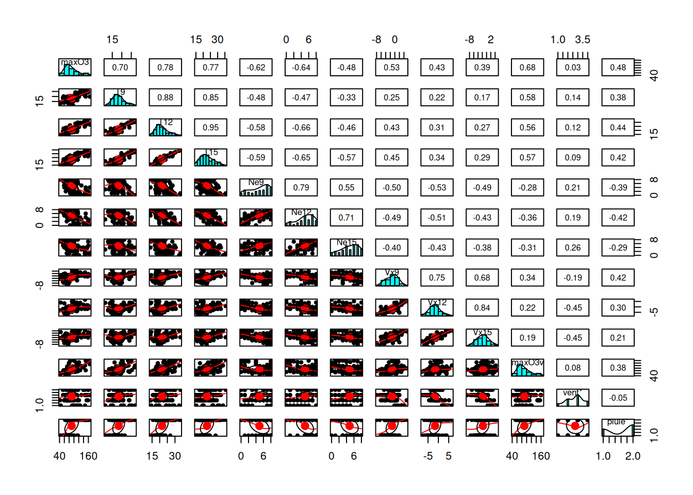
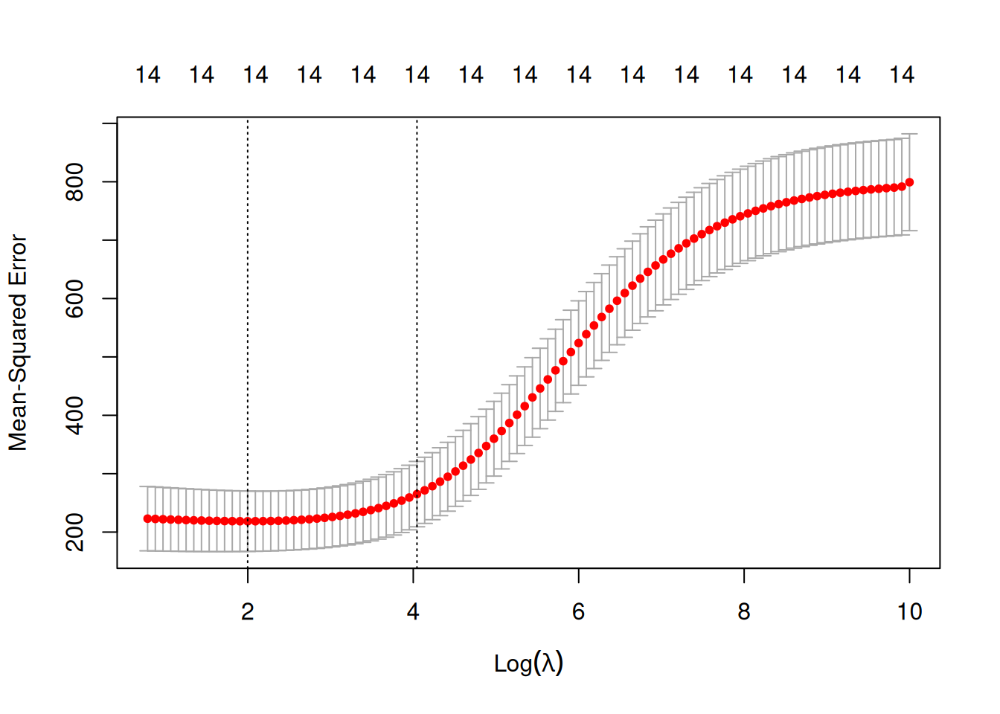

Comparaison de la regression Ridge et Lasso via le github de Laurent Rouvière
Bonus
Author
Clément Poupelin
Published
Invalid Date
Dans cette partie et avant de passer à l’exercice 7, nous allons faire la section 3.1 sur la gression Ridge et Lasso avec glmnet sous R du tutoriel de Laurent Rouvière
Rappels sur Ridge et Lasso
On se base encore ici sur notre modèle classique de régression linéaire :
\(y \in \mathbb{R}^{n}\) la variable réponse ou variable à expliquer
\(X \in \mathbb{R}^{n\times (p+1)}\) la matrice déterministe contenant nos \(p\) variables explicatives
\(\beta \in \mathbb{R}^{p+1}\) le vecteur qui contient les coefficients de régression \(\beta_0, ..., \beta_p\) que nous cherchons à estimer
\(\mathcal{E} \in \mathbb{R}^{n}\) le vecteur d’erreur qui n’est pas corrélé à nos variables explicatives. C’est la part d’aléa que nous n’arrivons pas à déterminer
Pour l’estimation des coefficients de regression de ce type de modèle, nous utilisons souvent la méthodes des moindres carrées ordinaire (MCO) qui nous donne
\[\hat{\beta} = \underset{\beta}{argmin}||y-X\beta||^2\] Malheureusement, lorsque \(p\) est grand ou que les variables sont linéairement dépendantes, les estimateurs des moindres carrées peuvent être mis en défaut. Les méthodes pénalisées ou sous contraintes consistent alors à restreindre l’espace sur lequel on minimise ce critère.
L’idée principale de ces méthodes est de contraindre la valeur des estimateurs MCO pour réduire la variance, quitte à augmenter un peu le biais (d’où la terminologie de “régression biaisée”). Nous obtenons donc, pour un certain \(t>0\), des estimations de la forme suivante : \[ \hat{\beta}^{pen} = \underset{\beta}{argmin}||y-X\beta||^2 \quad \text{sous la contrainte} \quad ||\beta||? \leq t\]
La régression Ridge contraint la norme \(\ell^2\) des coefficients \(\beta\) à ne pas exploser, i.e \(||\beta||_2 = \sum_{j=0}^{p} \beta_j^2 \leq t\). Cela conduit à la solution d’optimisation suivante :
\[
\hat{\beta}_{Ridge} = \underset{\beta}{\operatorname{argmin}} \ ||y - X\beta||^2 \quad \text{sous la contrainte} \quad \sum_{j=0}^{p} \beta_j^2 \leq t
\]
où \(\hat{\beta}_{Ridge}\) est unique, contrairement à Lasso qui peut produire plusieurs solutions.
Contrairement à Lasso, Ridge ne met pas exactement à zéro certains coefficients, mais réduit leur valeur. Il n’y a donc pas de sélection de variable effectué.
Cette méthode est tout de même robuste en grande dimension et particulièrement utile lorsque les variables sont fortement corrélées. Il empêche les coefficients de devenir trop grands, ce qui réduit la variance du modèle.
La régression Lasso (pour Least Absolute Shrinkage and Selection Operator) contraint la norme \(\ell^1\) de \(\beta\) à ne pas exploser, i.e \(||\beta||_1 = \sum_{j=0}^{p} |\beta_j| \leq t\). Nous obtenons donc
\[\hat{\beta}_{Lasso} = \underset{\beta}{argmin}||y-X\beta||^2 \quad \text{sous la contrainte} \quad \sum_{j=0}^{p} |\beta_j| \leq t \]
Où \(\hat{\beta}_{Lasso}\) n’est pas nécessairement unique mais la prévision \(\hat{y} = X\hat{\beta}_{Lasso}\) est unique.
Cette méthode est principalement caractérisée par le fait qu’elle est robuste à la grande dimension en sélectionnant les variables les plus pertinentes. En effet, elle nous permet de réduire les coefficients MCO des variables sélectionnées en rapprochant leur valeur de 0, ce qui est appelé la propriété de “seuillage doux” du Lasso.
Ici, il sera donc présenté les étapes principales qui permettent de faire ce type de régression avec R. Le package le plus souvent utilisé est glmnet.
my_boxplot <-function(data) {# Transformer les données en format long pour ggplot data_long <-melt(data)ggplot(data_long, aes(x = variable, y = value, fill = variable)) +geom_boxplot() +scale_fill_viridis_d() +# Palette de couleurs harmonieuselabs(title ="Distribution des Variables (Boxplot)", x ="Variables", y ="Valeurs") +theme_minimal() +# Thème épurétheme(axis.text.x =element_text(angle =45, hjust =1)) # Rotation des étiquettes}
Show the code
my_pairs.panels <-function(data){pairs.panels( data,method ="pearson", # Méthode de corrélation hist.col =brewer.pal(9, "Set3"), # Couleurs des histogrammesdensity =TRUE, # Ajout des courbes de densitéellipses =TRUE, # Ajout d'ellipses smooth =TRUE, # Ajout de régressions lisséeslm =TRUE, # Ajout des droites de régressioncol ="#69b3a2", # Couleur des pointsalpha =0.5# Transparence )}
Données
On considère le jeu de données ozone.txt où on cherche à expliquer la concentration maximale en ozone relevée sur une journée (variable maxO3) par d’autres variables essentiellement météorologiques.
La base de données d’origine ozone.txt répertorie 112 données météorologiques mesurées durant l’été 2001 à Rennes. Celles-ci sont caractérisées par les 13 variables suivantes :
maxO3
concentration maximale d'ozone (en DU)
T9
température à 9H (en °C)
T12
température à 12H (en °C)
T15
température à 15H (en °C)
Ne9
nébulosité à 9H (en octa)
Ne12
nébulosité à 12H (en octa)
Ne15
nébulosité à 15H (en octa)
Vx9
vitesse du vent à 9H
Vx12
vitesse du vent à 12H
Vx15
vitesse du vent à 15H
maxO3v
concentration maximale d'ozone de la veille (en DU)
vent
direction principale du vent (Nord / Ouest / Sud / Est)
pluie
présence ou non de pluie (Sec / Pluie)
On identifie le regroupement de toutes les données météorologiques récoltées en une journée par la date à laquelle les relevés ont été effectués.
maxO3 T9 T12 T15
Min. : 42.00 Min. :11.30 Min. :14.00 Min. :14.90
1st Qu.: 70.75 1st Qu.:16.20 1st Qu.:18.60 1st Qu.:19.27
Median : 81.50 Median :17.80 Median :20.55 Median :22.05
Mean : 90.30 Mean :18.36 Mean :21.53 Mean :22.63
3rd Qu.:106.00 3rd Qu.:19.93 3rd Qu.:23.55 3rd Qu.:25.40
Max. :166.00 Max. :27.00 Max. :33.50 Max. :35.50
Ne9 Ne12 Ne15 Vx9
Min. :0.000 Min. :0.000 Min. :0.00 Min. :-7.8785
1st Qu.:3.000 1st Qu.:4.000 1st Qu.:3.00 1st Qu.:-3.2765
Median :6.000 Median :5.000 Median :5.00 Median :-0.8660
Mean :4.929 Mean :5.018 Mean :4.83 Mean :-1.2143
3rd Qu.:7.000 3rd Qu.:7.000 3rd Qu.:7.00 3rd Qu.: 0.6946
Max. :8.000 Max. :8.000 Max. :8.00 Max. : 5.1962
Vx12 Vx15 maxO3v vent
Min. :-7.878 Min. :-9.000 Min. : 42.00 Length:112
1st Qu.:-3.565 1st Qu.:-3.939 1st Qu.: 71.00 Class :character
Median :-1.879 Median :-1.550 Median : 82.50 Mode :character
Mean :-1.611 Mean :-1.691 Mean : 90.57
3rd Qu.: 0.000 3rd Qu.: 0.000 3rd Qu.:106.00
Max. : 6.578 Max. : 5.000 Max. :166.00
pluie
Length:112
Class :character
Mode :character
On regarde ici la corrélation calculée entre chacune de nos variables.
Show the code
my_pairs.panels(ozone)
Résultats
On voit la présence de plusieurs fortes corrélations qui peut déjà nous alerter si l’on veut faire des modèles de regressions linéaires car on risque d’avoir un problème de colinéarité entre les varibales explicatives.
Cependant ces corrélation fortes sont surtout présentes pour les variables qui sont à différents points de temps ce qui est logique.
Avec une Analyse en Composantes Principales (PCA) on peut regarder un peu le comportement de nos données.
En effet, Cette méthode respose sur la transformation des variables d’origine en nouvelles variables non corrélées, appelées composantes principales, qui capturent successivement la plus grande variance possible des données.
Ici, on spécifi nos varibales qualitatives et on décide de mettre la variable max03 et max03v en variable supplémentaire, ce qui veut d’ire qu’elles ne seront pas considérés pour la formation de nos composantes principales (variable que l’on cherchera à estimer plus tard).
Tout d’abord, on peut commencer par regarder le pourcentage de variance expliqué par nos différentes composantes principales.
Show the code
fviz_eig(res_pca, ncp =10,addlabels =TRUE, barfill ="coral",barcolor ="coral",ylim =c(0, 60),main ="Percentage of variance of the 10 first components")
Résultats
On voit ainsi que la majorité de la variance est expliquée par nos deux premières composantes principales.
Le plan des individus est une projection des observations sur les axes principaux de la PCA. Cette visualisation permet d’identifier des regroupements, tendances et anomalies au sein des données.
Ainsi, des individus proches sur le graphique ont des caractéristiques similaires par rapport aux variables utilisées.
Puis, le placement d’un individu en fonction des axes peut permettre de savoir comment le jouer se caractérise par rapport aux variables qui contribuent le plus à ces axes.
Ici on voit une repartition plutot uniforme sur le plan qui ne semble pas permettre de distinguer une séparation forte correspodant à nos variables qualitatives.
Le cercle des variables est une représentation graphique qui permet d’analyser les relations entre les variables initiales et les composantes principales qui forment nos axes. Il est basé sur les corrélations entre les variables et les axes principaux.
Ainsi, plus une variable est proche du bord du cercle, plus elle est bien représentée sur le plan factoriel et contribue fortement à la formation des axes. Ici, on utilise le cos2 pour le gradient de couleur qui va aider à l’indentifictation de ces différentes qualitées de représentation.
De plus, selon l’angle entre deux varibles, on peut faire des suppositions sur leur corrélation :
Si deux variables ont des vecteurs proches (petit angle), elles sont fortement corrélées positivement
Si deux variables ont des vecteurs opposés (angle proche de 180°), elles sont corrélées négativement
Si l’angle est proche de 90°, alors les variables ne sont pas corrélées
Dans notre cas, ce que l’on peut voir c’est que la majorité de nos variables sont bien représentées par nos deux axes (cumulant plus de 70% d’explication). Mais beaucoup semblent aussi fortement corrélées avecla formation de trois groupes. Cette corrélation ayant déjà pu être observé précédemment et touours logique du fait du côté longitudinale de nos données.
Ce que l’on peut tout de même ajouté c’est que les variables max03 et surtout max03v semblent plutot corrélées aux variables température. Constat qui peut se confirmer avec le pairs.panels précédent.
maxO3 T9 T12 T15
Min. : 42.00 Min. :11.30 Min. :14.00 Min. :14.90
1st Qu.: 70.75 1st Qu.:16.20 1st Qu.:18.60 1st Qu.:19.27
Median : 81.50 Median :17.80 Median :20.55 Median :22.05
Mean : 90.30 Mean :18.36 Mean :21.53 Mean :22.63
3rd Qu.:106.00 3rd Qu.:19.93 3rd Qu.:23.55 3rd Qu.:25.40
Max. :166.00 Max. :27.00 Max. :33.50 Max. :35.50
Ne9 Ne12 Ne15 Vx9
Min. :0.000 Min. :0.000 Min. :0.00 Min. :-7.8785
1st Qu.:3.000 1st Qu.:4.000 1st Qu.:3.00 1st Qu.:-3.2765
Median :6.000 Median :5.000 Median :5.00 Median :-0.8660
Mean :4.929 Mean :5.018 Mean :4.83 Mean :-1.2143
3rd Qu.:7.000 3rd Qu.:7.000 3rd Qu.:7.00 3rd Qu.: 0.6946
Max. :8.000 Max. :8.000 Max. :8.00 Max. : 5.1962
Vx12 Vx15 maxO3v vent
Min. :-7.878 Min. :-9.000 Min. : 42.00 Length:112
1st Qu.:-3.565 1st Qu.:-3.939 1st Qu.: 71.00 Class :character
Median :-1.879 Median :-1.550 Median : 82.50 Mode :character
Mean :-1.611 Mean :-1.691 Mean : 90.57
3rd Qu.: 0.000 3rd Qu.: 0.000 3rd Qu.:106.00
Max. : 6.578 Max. : 5.000 Max. :166.00
pluie
Length:112
Class :character
Mode :character
Show the code
library(psych)pairs.panels(ozone)

Show the code
ozone.X <-model.matrix(maxO3~.,data=ozone)[,-1] # codage des variables qualitatives avec la fonction model.matrixozone.Y <- ozone$maxO3library(glmnet)
Le chargement a nécessité le package : Matrix
Attachement du package : 'Matrix'
Les objets suivants sont masqués depuis 'package:tidyr':
expand, pack, unpack
# When alpha=0, the largest lambda reported does not quite give # the zero coefficients reported (lambda=inf would in principle).# Instead, the largest lambda for alpha=0.001 is used, and the sequence # of lambda values is derived from this.mod.R$beta[,1]
# Our coefficientspar(mfrow=c(1,2))plot(mod.R,label=TRUE) # lecture du graphe : # - chaque courbe c'est lévolution d'un beta# - à droite on à les valeurs de beta MCO # - à gauche c'est quand lambda augmente, on tend vers 0plot(mod.R,xvar="lambda",label=TRUE)
par(mfrow=c(1,1))##### Sélection des paramètres de régularisation ####ridgeCV <-cv.glmnet(ozone.X, ozone.Y, alpha=0)plot(ridgeCV)

Show the code
# abline(v=log(ridgeCV$lambda.1se), col='red')# abline(v=log(ridgeCV$lambda.min), col='red')# On visualise les erreurs quadratiques calculées # par validation croisée 10 blocs en fonction de lambda (échelle log)# Deux traites verticaux :# - celui de gauche correspond à la valeur de `lambda`# qui minimise l’erreur quadratique ;# # - celui de droite correspond à la plus grande valeur de `lambda` # telle que l’erreur ne dépasse pas # l’erreur minimale + 1 écart-type estimé de cette erreur.# D’un point de vu pratique, cela signifie que l’utilisateur# peut choisir n’importe quelle valeur de lambda entre # les deux traits verticaux. Si on veut diminuer # la complexité du modèle on choisira la valeur de droite.# On peut obtenir ces deux valeurs ridgeCV$lambda.min
##### Prédiction de la variable cible pour de nouveaux individus ##### Première approche :# réajuster le modèle sur toutes les données pour la valeur # de lambda sélectionnée.# Cette étape est en réalité déjà effectuée par la fonction cv.glmnet.# Il suffit par conséquent d’appliquer la fonction predict à l’objet # obtenu avec cv.glmnet en spécifiant la valeur de lambda souhaitée.predict(ridgeCV, newx = ozone.X[50:51,],s="lambda.min")
# Comparaison performances MCO, ridge et lasso ##### validation croisée pour comparer les performances des estimateurs# MCO, ridge et lasso.# On pourra utiliser les données ozone_complet.txt# qui contiennent plus d’individus et de variables.# ozone1 <- read.csv("~/1. Workspace/Master IS/M2/X3MS020 Statistique en grande dimension/ozone_complet.txt", sep=";") |> na.omit()ozone1 <-read.table("https://r-stat-sc-donnees.github.io/ozone.txt", header=TRUE) |>na.omit()ozone1.X <-model.matrix(maxO3~., data=ozone1)[,-1]ozone1.Y <- ozone1$maxO3library(tibble)library(dplyr)cv.ridge.lasso <-function(data,form){set.seed(1234) data.X <-model.matrix(form,data=data)[,-1] data.Y <- data$maxO3 blocs <- caret::createFolds(1:nrow(data),k=10) prev <-matrix(0,ncol=3,nrow=nrow(data)) |>as.data.frame()names(prev) <-c("lin","ridge","lasso")for (k in1:10){ app <- data[-blocs[[k]],] test <- data[blocs[[k]],] app.X <- data.X[-blocs[[k]],] app.Y <- data.Y[-blocs[[k]]] test.X <- data.X[blocs[[k]],] test.Y <- data.Y[blocs[[k]]] ridge <-cv.glmnet(app.X,app.Y,alpha=0) lasso <-cv.glmnet(app.X,app.Y,alpha=1) lin <-lm(form,data=app) prev[blocs[[k]],] <-tibble(lin=predict(lin,newdata=test),ridge=as.vector(predict(ridge,newx=test.X)),lasso=as.vector(predict(lasso,newx=test.X))) } err <- prev |>mutate(obs=data$maxO3) |>summarise_at(1:3,~mean((obs-.)^2))return(err)}cv.ridge.lasso(ozone1, form=formula(maxO3~.))
lin ridge lasso
1 247.4596 271.8111 272.9936
Show the code
# On remarque que les approches régularisées # n’apportent rien par rapport aux estimateurs MCO ici.# Ceci peut s’expliquer par le fait que le nombre de variables# n’est pas très important.# Considérons toutes les interactions d’ordre 2cv.ridge.lasso(ozone1, form=formula(maxO3~.^2))
Warning in predict.lm(lin, newdata = test): prediction from rank-deficient fit;
attr(*, "non-estim") has doubtful cases
Warning in predict.lm(lin, newdata = test): prediction from rank-deficient fit;
attr(*, "non-estim") has doubtful cases
Warning in predict.lm(lin, newdata = test): prediction from rank-deficient fit;
attr(*, "non-estim") has doubtful cases
Warning in predict.lm(lin, newdata = test): prediction from rank-deficient fit;
attr(*, "non-estim") has doubtful cases
Warning in predict.lm(lin, newdata = test): prediction from rank-deficient fit;
attr(*, "non-estim") has doubtful cases
Warning in predict.lm(lin, newdata = test): prediction from rank-deficient fit;
attr(*, "non-estim") has doubtful cases
Warning in predict.lm(lin, newdata = test): prediction from rank-deficient fit;
attr(*, "non-estim") has doubtful cases
Warning in predict.lm(lin, newdata = test): prediction from rank-deficient fit;
attr(*, "non-estim") has doubtful cases
lin ridge lasso
1 196622.7 335.9692 268.1647
Show the code
# Les méthodes régularisées permettent ici de diminuer# les erreurs quadratiques de manière intéressante.# Cela vient certainement du fait du nombre de # variables explicatives qui est beaucoup plus # important lorsqu’on prend en compte toutes # les interactions d’ordre 2, nous en avons en effet 253 :ozone2.X <-model.matrix(maxO3~.^2,data=ozone1)[,-1]dim(ozone2.X)
[1] 112 102
Source Code
---title: "Exercice 06 Bonus : Ridge vs Lasso"author: "Clément Poupelin"date: "2023-2024"format: html: embed-resources: false toc: true code-fold: true code-summary: "Show the code" code-tools: true toc-location: right page-layout: article code-overflow: wraptoc: truenumber-sections: falseeditor: visualcategories: ["Bonus"]image: ""description: "Comparaison de la regression Ridge et Lasso via le github de Laurent Rouvière"---Dans cette partie et avant de passer à l'exercice 7, nous allons faire la section 3.1 sur la gression Ridge etLasso avec glmnet sous R du [tutoriel de Laurent Rouvière](https://lrouviere.github.io/TUTO_GRANDE_DIM/correction/03-ridge-lasso.html)# Rappels sur Ridge et LassoOn se base encore ici sur notre modèle classique de régression linéaire :$$y = X\beta + \mathcal{E} \quad \text{ou} \quad y = \beta_0 + \beta_1X^1 + ... + \beta_pX^p + \mathcal{E}$$ - $y \in \mathbb{R}^{n}$ la variable réponse ou variable à expliquer- $X \in \mathbb{R}^{n\times (p+1)}$ la matrice déterministe contenant nos $p$ variables explicatives- $\beta \in \mathbb{R}^{p+1}$ le vecteur qui contient les coefficients de régression $\beta_0, ..., \beta_p$ que nous cherchons à estimer- $\mathcal{E} \in \mathbb{R}^{n}$ le vecteur d'erreur qui n'est pas corrélé à nos variables explicatives. C'est la part d'aléa que nous n'arrivons pas à déterminerPour l'estimation des coefficients de regression de ce type de modèle, nous utilisons souvent la méthodes des moindres carrées ordinaire (MCO) qui nous donne $$\hat{\beta} = \underset{\beta}{argmin}||y-X\beta||^2$$Malheureusement, lorsque $p$ est grand ou que les variables sont linéairement dépendantes, les estimateurs des moindres carrées peuvent être mis en défaut. Les méthodes pénalisées ou sous contraintes consistent alors à restreindre l’espace sur lequel on minimise ce critère.\L'idée principale de ces méthodes est de contraindre la valeur des estimateurs MCO pour réduire la variance, quitte à augmenter un peu le biais (d’où la terminologie de "régression biaisée"). Nous obtenons donc, pour un certain $t>0$, des estimations de la forme suivante : $$ \hat{\beta}^{pen} = \underset{\beta}{argmin}||y-X\beta||^2 \quad \text{sous la contrainte} \quad ||\beta||? \leq t$$::: panel-tabset## Ridge La régression Ridge contraint la **norme $\ell^2$** des coefficients $\beta$ à ne pas exploser, i.e $||\beta||_2 = \sum_{j=0}^{p} \beta_j^2 \leq t$. Cela conduit à la solution d'optimisation suivante :$$\hat{\beta}_{Ridge} = \underset{\beta}{\operatorname{argmin}} \ ||y - X\beta||^2 \quad \text{sous la contrainte} \quad \sum_{j=0}^{p} \beta_j^2 \leq t$$où $\hat{\beta}_{Ridge}$ est **unique**, contrairement à Lasso qui peut produire plusieurs solutions. Contrairement à Lasso, Ridge ne met pas exactement à zéro certains coefficients, mais réduit leur valeur. Il n'y a donc pas de sélection de variable effectué.\Cette méthode est tout de même robuste en grande dimension et particulièrement utile lorsque les variables sont fortement corrélées. Il empêche les coefficients de devenir trop grands, ce qui réduit la variance du modèle. \## Lasso La régression Lasso (pour Least Absolute Shrinkage and Selection Operator) contraint la norme $\ell^1$ de $\beta$ à ne pas exploser, i.e $||\beta||_1 = \sum_{j=0}^{p} |\beta_j| \leq t$. Nous obtenons donc$$\hat{\beta}_{Lasso} = \underset{\beta}{argmin}||y-X\beta||^2 \quad \text{sous la contrainte} \quad \sum_{j=0}^{p} |\beta_j| \leq t $$Où $\hat{\beta}_{Lasso}$ n’est pas nécessairement unique mais la prévision $\hat{y} = X\hat{\beta}_{Lasso}$ est unique.\Cette méthode est principalement caractérisée par le fait qu'elle est robuste à la grande dimension en sélectionnant les variables les plus pertinentes. En effet, elle nous permet de réduire les coefficients MCO des variables sélectionnées en rapprochant leur valeur de 0, ce qui est appelé la propriété de "seuillage doux" du Lasso.::: Ici, il sera donc présenté les étapes principales qui permettent de faire ce type de régression avec *R*. Le package le plus souvent utilisé est *glmnet*.# Setup::: panel-tabset## packages```{r}# PCAlibrary(FactoMineR)library(factoextra)# Plots## ggplotlibrary(ggplot2)library(reshape2) # transformer les données en format longlibrary(gridExtra)## for pairs panellibrary(psych)library(RColorBrewer)```## fonctions ::: panel-tabset### boxplot ```{r}my_boxplot <-function(data) {# Transformer les données en format long pour ggplot data_long <-melt(data)ggplot(data_long, aes(x = variable, y = value, fill = variable)) +geom_boxplot() +scale_fill_viridis_d() +# Palette de couleurs harmonieuselabs(title ="Distribution des Variables (Boxplot)", x ="Variables", y ="Valeurs") +theme_minimal() +# Thème épurétheme(axis.text.x =element_text(angle =45, hjust =1)) # Rotation des étiquettes}```### pairs.panels ```{r}my_pairs.panels <-function(data){pairs.panels( data,method ="pearson", # Méthode de corrélation hist.col =brewer.pal(9, "Set3"), # Couleurs des histogrammesdensity =TRUE, # Ajout des courbes de densitéellipses =TRUE, # Ajout d'ellipses smooth =TRUE, # Ajout de régressions lisséeslm =TRUE, # Ajout des droites de régressioncol ="#69b3a2", # Couleur des pointsalpha =0.5# Transparence )}```::::::# DonnéesOn considère le jeu de données ozone.txt où on cherche à expliquer la concentration maximale en ozone relevée sur une journée (variable maxO3) par d’autres variables essentiellement météorologiques.La base de données d'origine *ozone.txt* répertorie 112 données météorologiques mesurées durant l'été 2001 à Rennes. Celles-ci sont caractérisées par les 13 variables suivantes : ```{r, echo=FALSE, message=FALSE, warning=FALSE}ozone <-read.table("https://r-stat-sc-donnees.github.io/ozone.txt", header=TRUE)library(tidyverse)library(kableExtra)identity_keys <- cell_spec( x = colnames(ozone), format = "html", bold = TRUE)identity_values <- c("concentration maximale d'ozone (en DU)", "température à 9H (en °C)", "température à 12H (en °C)", "température à 15H (en °C)", "nébulosité à 9H (en octa)", "nébulosité à 12H (en octa)", "nébulosité à 15H (en octa)", "vitesse du vent à 9H", "vitesse du vent à 12H", "vitesse du vent à 15H", "concentration maximale d'ozone de la veille (en DU)", "direction principale du vent (Nord / Ouest / Sud / Est)", "présence ou non de pluie (Sec / Pluie)")tibble( keys = identity_keys, values = identity_values, ) %>% kbl( format = "html", booktabs = TRUE, escape = FALSE, col.names = NULL ) %>% kable_styling(bootstrap_options = c("hover", "condensed"))```On identifie le regroupement de toutes les données météorologiques récoltées en une journée par la date à laquelle les relevés ont été effectués.```{r}ozone <-read.table("https://r-stat-sc-donnees.github.io/ozone.txt", header=TRUE)ozone %>% DT::datatable()``````{r}ozone %>%summary()```# Analyse descriptive::: panel-tabset## BoxplotOn peut regarder un peu la distribution de nos différents variables quantitatives via des boxplots.```{r, message=FALSE, fig.height=6, fig.width=8}my_boxplot(ozone)```::: success-header::: success-icon::: Résultats:::::: successOn remarque bien que les variabeles qui sont de même nature mais à des points de temps différents sont d'avantages similaires.:::Pour confirmer cela, on peut faire des boxplot pour uniquement une varibale et ses différents points de temps.::: panel-tabset### Température```{r, message=FALSE, fig.height=6, fig.width=8}subset(ozone, select = c("T9", "T12", "T15")) %>% my_boxplot()```### Nébulosité```{r, message=FALSE, fig.height=6, fig.width=8}subset(ozone, select = c("Ne9", "Ne12", "Ne15")) %>% my_boxplot()```### Vitesse du vent ```{r, message=FALSE, fig.height=6, fig.width=8}subset(ozone, select = c("Vx9", "Vx12", "Vx15")) %>% my_boxplot()```:::## Correlation panelOn regarde ici la corrélation calculée entre chacune de nos variables.```{r, fig.height=22, fig.width=28}my_pairs.panels(ozone)```::: success-header::: success-icon::: Résultats:::::: successOn voit la présence de plusieurs fortes corrélations qui peut déjà nous alerter si l'on veut faire des modèles de regressions linéaires car on risque d'avoir un problème de colinéarité entre les varibales explicatives.Cependant ces corrélation fortes sont surtout présentes pour les variables qui sont à différents points de temps ce qui est logique.:::## PCAAvec une Analyse en Composantes Principales (PCA) on peut regarder un peu le comportement de nos données.En effet, Cette méthode respose sur la transformation des variables d'origine en nouvelles variables non corrélées, appelées composantes principales, qui capturent successivement la plus grande variance possible des données.```{r}res_pca <-PCA(ozone, quali.sup =c(which(colnames(ozone) %in%c("vent", "pluie"))),quanti.sup =c(which(colnames(ozone) %in%c("max03", "max03v"))),graph =FALSE)```Ici, on spécifi nos varibales qualitatives et on décide de mettre la variable *max03* et *max03v* en variable supplémentaire, ce qui veut d'ire qu'elles ne seront pas considérés pour la formation de nos composantes principales (variable que l'on cherchera à estimer plus tard).::: panel-tabset#### Barplot des variancesTout d'abord, on peut commencer par regarder le pourcentage de variance expliqué par nos différentes composantes principales.```{r}fviz_eig(res_pca, ncp =10,addlabels =TRUE, barfill ="coral",barcolor ="coral",ylim =c(0, 60),main ="Percentage of variance of the 10 first components")```::: success-header::: success-icon::: Résultats:::::: successOn voit ainsi que la majorité de la variance est expliquée par nos deux premières composantes principales.:::#### IndividusLe plan des individus est une projection des observations sur les axes principaux de la PCA. Cette visualisation permet d’identifier des regroupements, tendances et anomalies au sein des données.Ainsi, des individus proches sur le graphique ont des caractéristiques similaires par rapport aux variables utilisées.Puis, le placement d'un individu en fonction des axes peut permettre de savoir comment le jouer se caractérise par rapport aux variables qui contribuent le plus à ces axes.::: panel-tabset##### Pluie ```{r, fig.height=6, fig.width=8}fviz_pca_ind(res_pca, label="none", pointsize = 2, habillage=as.factor(ozone$pluie), addEllipses=TRUE, ellipse.level=0.95)```##### vent ```{r, fig.height=6, fig.width=8}fviz_pca_ind(res_pca, label="none", pointsize = 2, habillage=as.factor(ozone$vent), addEllipses=TRUE, ellipse.level=0.95)```:::::: success-header::: success-icon::: Résultats:::::: successIci on voit une repartition plutot uniforme sur le plan qui ne semble pas permettre de distinguer une séparation forte correspodant à nos variables qualitatives.:::#### VariablesLe cercle des variables est une représentation graphique qui permet d’analyser les relations entre les variables initiales et les composantes principales qui forment nos axes. Il est basé sur les corrélations entre les variables et les axes principaux.Ainsi, plus une variable est proche du bord du cercle, plus elle est bien représentée sur le plan factoriel et contribue fortement à la formation des axes. Ici, on utilise le cos2 pour le gradient de couleur qui va aider à l'indentifictation de ces différentes qualitées de représentation.De plus, selon l'angle entre deux varibles, on peut faire des suppositions sur leur corrélation :- Si deux variables ont des vecteurs proches (petit angle), elles sont fortement corrélées positivement- Si deux variables ont des vecteurs opposés (angle proche de 180°), elles sont corrélées négativement- Si l’angle est proche de 90°, alors les variables ne sont pas corrélées```{r, fig.height=6, fig.width=8}fviz_pca_var(res_pca, col.var = "cos2", gradient.cols = rainbow(n = 8, start = .6, end = .9), repel = TRUE)```::: success-header::: success-icon::: Résultats:::::: successDans notre cas, ce que l'on peut voir c'est que la majorité de nos variables sont bien représentées par nos deux axes (cumulant plus de 70% d'explication). Mais beaucoup semblent aussi fortement corrélées avecla formation de trois groupes. Cette corrélation ayant déjà pu être observé précédemment et touours logique du fait du côté longitudinale de nos données.Ce que l'on peut tout de même ajouté c'est que les variables max03 et surtout max03v semblent plutot corrélées aux variables température. Constat qui peut se confirmer avec le pairs.panels précédent.:::::::::# Analyse inférentielle```{r}# ozone <- read.csv("~/1.Workspace/Master_IS/M2/X3MS020_Statistique_en_grande_dimension/ozone.txt", sep="")ozone <-read.table("https://r-stat-sc-donnees.github.io/ozone.txt", header=TRUE)head(ozone)summary(ozone)library(psych)pairs.panels(ozone)ozone.X <-model.matrix(maxO3~.,data=ozone)[,-1] # codage des variables qualitatives avec la fonction model.matrixozone.Y <- ozone$maxO3library(glmnet)mod.R <-glmnet(ozone.X, ozone.Y, alpha=0) ## Ridge mod.L <-glmnet(ozone.X, ozone.Y, alpha=1) ## Lasso# Par défaut standardize = TRUE, intercept = TRUE## Analyse Modèle Ridgemod.R$lambda |>head()# When alpha=0, the largest lambda reported does not quite give # the zero coefficients reported (lambda=inf would in principle).# Instead, the largest lambda for alpha=0.001 is used, and the sequence # of lambda values is derived from this.mod.R$beta[,1]# Our coefficientspar(mfrow=c(1,2))plot(mod.R,label=TRUE) # lecture du graphe : # - chaque courbe c'est lévolution d'un beta# - à droite on à les valeurs de beta MCO # - à gauche c'est quand lambda augmente, on tend vers 0plot(mod.R,xvar="lambda",label=TRUE)par(mfrow=c(1,1))## Analyse Modèle Lassomod.L$lambda |>head()mod.L$beta[,1]par(mfrow=c(1,2))plot(mod.L,label=TRUE) plot(mod.L,xvar="lambda",label=TRUE)par(mfrow=c(1,1))##### Sélection des paramètres de régularisation ####ridgeCV <-cv.glmnet(ozone.X, ozone.Y, alpha=0)plot(ridgeCV)# abline(v=log(ridgeCV$lambda.1se), col='red')# abline(v=log(ridgeCV$lambda.min), col='red')# On visualise les erreurs quadratiques calculées # par validation croisée 10 blocs en fonction de lambda (échelle log)# Deux traites verticaux :# - celui de gauche correspond à la valeur de `lambda`# qui minimise l’erreur quadratique ;# # - celui de droite correspond à la plus grande valeur de `lambda` # telle que l’erreur ne dépasse pas # l’erreur minimale + 1 écart-type estimé de cette erreur.# D’un point de vu pratique, cela signifie que l’utilisateur# peut choisir n’importe quelle valeur de lambda entre # les deux traits verticaux. Si on veut diminuer # la complexité du modèle on choisira la valeur de droite.# On peut obtenir ces deux valeurs ridgeCV$lambda.minridgeCV$lambda.1selassoCV <-cv.glmnet(ozone.X, ozone.Y, alpha=1)plot(lassoCV)# abline(v=log(lassoCV$lambda.1se), col='red')# abline(v=log(lassoCV$lambda.min), col='red')lassoCV$lambda.minlassoCV$lambda.1se##### Prédiction de la variable cible pour de nouveaux individus ##### Première approche :# réajuster le modèle sur toutes les données pour la valeur # de lambda sélectionnée.# Cette étape est en réalité déjà effectuée par la fonction cv.glmnet.# Il suffit par conséquent d’appliquer la fonction predict à l’objet # obtenu avec cv.glmnet en spécifiant la valeur de lambda souhaitée.predict(ridgeCV, newx = ozone.X[50:51,],s="lambda.min")predict(ridgeCV, newx = ozone.X[50:51,],s="lambda.1se")predict(lassoCV, newx = ozone.X[50:51,],s="lambda.min")predict(lassoCV, newx = ozone.X[50:51,],s="lambda.1se")# Comparaison performances MCO, ridge et lasso ##### validation croisée pour comparer les performances des estimateurs# MCO, ridge et lasso.# On pourra utiliser les données ozone_complet.txt# qui contiennent plus d’individus et de variables.# ozone1 <- read.csv("~/1. Workspace/Master IS/M2/X3MS020 Statistique en grande dimension/ozone_complet.txt", sep=";") |> na.omit()ozone1 <-read.table("https://r-stat-sc-donnees.github.io/ozone.txt", header=TRUE) |>na.omit()ozone1.X <-model.matrix(maxO3~., data=ozone1)[,-1]ozone1.Y <- ozone1$maxO3library(tibble)library(dplyr)cv.ridge.lasso <-function(data,form){set.seed(1234) data.X <-model.matrix(form,data=data)[,-1] data.Y <- data$maxO3 blocs <- caret::createFolds(1:nrow(data),k=10) prev <-matrix(0,ncol=3,nrow=nrow(data)) |>as.data.frame()names(prev) <-c("lin","ridge","lasso")for (k in1:10){ app <- data[-blocs[[k]],] test <- data[blocs[[k]],] app.X <- data.X[-blocs[[k]],] app.Y <- data.Y[-blocs[[k]]] test.X <- data.X[blocs[[k]],] test.Y <- data.Y[blocs[[k]]] ridge <-cv.glmnet(app.X,app.Y,alpha=0) lasso <-cv.glmnet(app.X,app.Y,alpha=1) lin <-lm(form,data=app) prev[blocs[[k]],] <-tibble(lin=predict(lin,newdata=test),ridge=as.vector(predict(ridge,newx=test.X)),lasso=as.vector(predict(lasso,newx=test.X))) } err <- prev |>mutate(obs=data$maxO3) |>summarise_at(1:3,~mean((obs-.)^2))return(err)}cv.ridge.lasso(ozone1, form=formula(maxO3~.))# On remarque que les approches régularisées # n’apportent rien par rapport aux estimateurs MCO ici.# Ceci peut s’expliquer par le fait que le nombre de variables# n’est pas très important.# Considérons toutes les interactions d’ordre 2cv.ridge.lasso(ozone1, form=formula(maxO3~.^2))# Les méthodes régularisées permettent ici de diminuer# les erreurs quadratiques de manière intéressante.# Cela vient certainement du fait du nombre de # variables explicatives qui est beaucoup plus # important lorsqu’on prend en compte toutes # les interactions d’ordre 2, nous en avons en effet 253 :ozone2.X <-model.matrix(maxO3~.^2,data=ozone1)[,-1]dim(ozone2.X)```